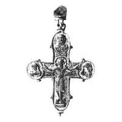

Catalog › CE-0794 · KOR2003-II.1.1.177
Valvă de față de encolpion cu inel de agățare fațetat, Răstignire și adstanți în poză de jale
sec. după model XII (1101–1200) · loc necunoscut · Muzeul de Istorie de Stat, Moscova (GIM), secția de arheologie, inv. 17086; оп. 1902/3
single valve of a reliquary cross, aramă; c. după model XII (1101–1200); find spot unknown; kept at Muzeul de Istorie de Stat, Moscova (GIM), secția de arheologie.


Identificare
- Categorie
- Valvă izolată
- Material
- Aramă
- Tehnică
- Turnare în relief; Gravare (incizie)
- Dimensiuni
- Î 78 × L 68 mm
Iconografie
- Avers
- Sf. Ioan; Sf. Nicolae
- Descriere avers
- Valva de față a unui encolpion cu inel de agățare fațetat, posibil nu contemporan cu această valvă. Pe interior se văd adâncituri corespunzătoare reliefurilor exterioare. Pe exterior, imaginea Răstignirii fără evidențierea traversei lemnului crucii, dar cu tăbliță și suppedaneum ce se unesc cu medalionul de sus; semifigurile adstanților, Maica Domnului și Ioan Botezătorul, în poză de jale; în medalionul de sus imagine frontală a unui sfânt (Nicolae?). Valva și medalioanele sunt încadrate de o bordură zimțată. Inscripțiile sunt făcute cu linii adânci, dar nu se citesc, doar se ghicesc, probabil ca imitație a unei inscripții pe jumătate ștearsă a modelului după care a fost turnată crucea.
Datare și atribuire
- Datare
- sec. după model XII (1101–1200)
- Centru
- Necunoscut
- Tipologie
- Korzukhina–Peskova 2003, tip II 1 1
Descoperire
- Context
- Colecție (fără context)
Păstrare și referințe
- Colecție
- Muzeul de Istorie de Stat, Moscova (GIM), secția de arheologie
- Nr. inventar
- 17086; оп. 1902/3
- Bibliografie
- G. F. Korzukhina, A. A. Peskova, Древнерусские энколпионы. Нагрудные кресты-реликварии XI–XIII вв., Sankt-Petersburg, 2003 [Korzukhina–Peskova 2003], p. 78, cat. nr. II 1 1/177, reprodusă la Табл. 31 (planșe, p. 273).
- Figura
- Табл. 31
- Planșe
- Korzukhina–Peskova 2003, Табл. 31 (planșă fără paginație proprie în PDF; p. 273 tipărită)
- Observații
- Datare după Peskova: sec. după model XII. Coordonate: nu sunt date în sursă.
Citare: Corpus Encolpiorum, CE-0794, Valvă de față de encolpion cu inel de agățare fațetat, Răstignire și adstanți în poză de jale, --root/piese/KOR2003-II.1.1.177/ (accesat 2026-10-20).